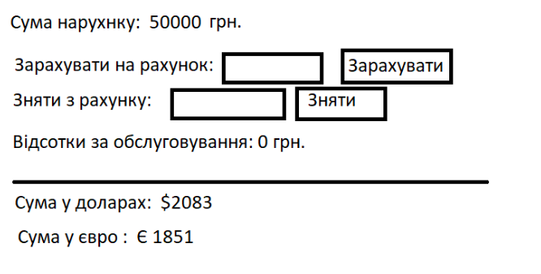

Задача 4
“Рахунок у банку”
Вимоги:
1) Спочатку сума дорівнює 0грн. Змінити суму у гривнях можна або зарахуванням на рахунок, або зняттям.
2) Сума автоматично переводиться у долари та євро (фіксований курс задається у data).
3) можливість зарахувати суму (контролювати, щоб не була від’ємною)
4) можливість зняти (щоб не можна зняти більше ніж є на рахунку)
5) при виконанні зняття і зарахування коштів вираховувати 3% від суми (відображати кількість відсотків автоматично)
При зміні суми :
- якщо було зняття, то суму відоражати червоним
- якщо було зарахування, то суму відображати зеленим
Якщо сума валюти менша за 100 то відображати червоним кольором, інакше - зеленим
